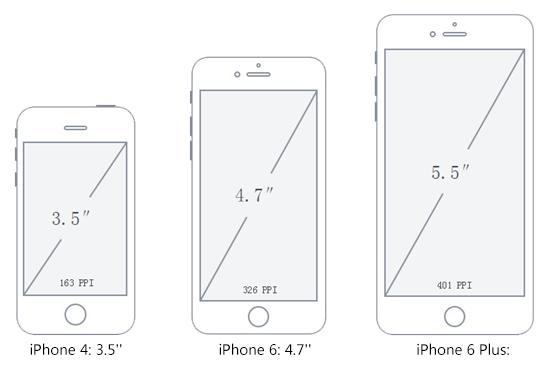
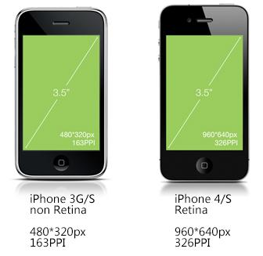
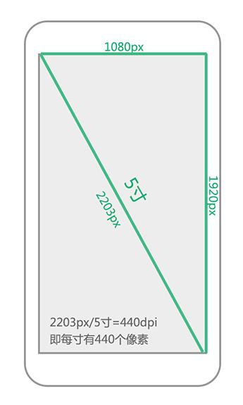
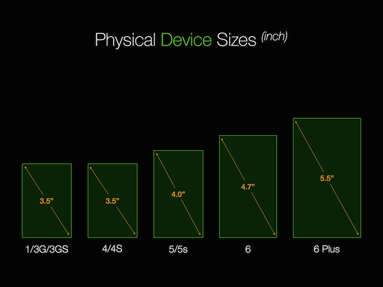
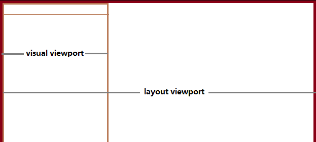
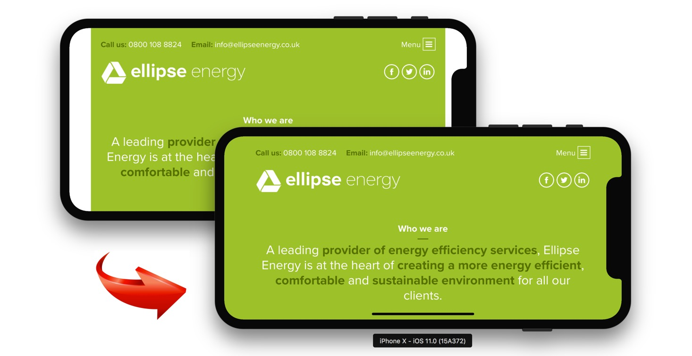
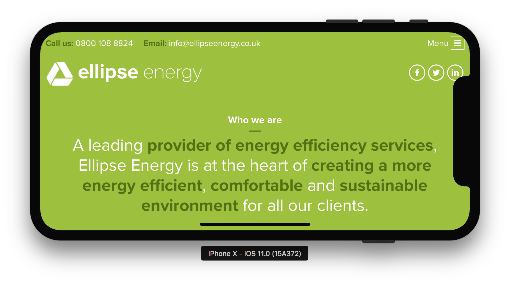
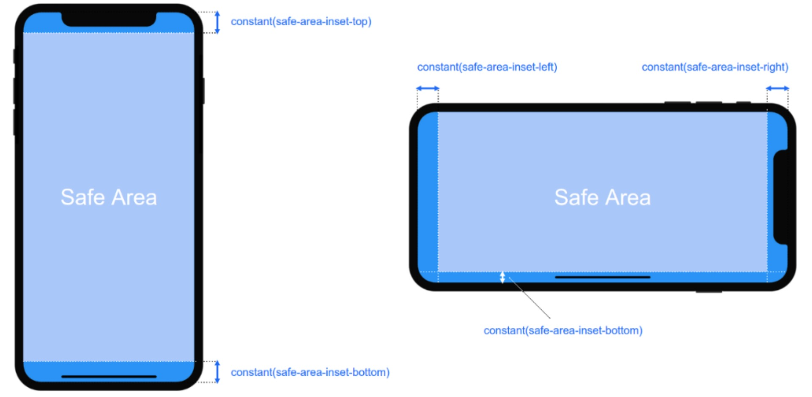
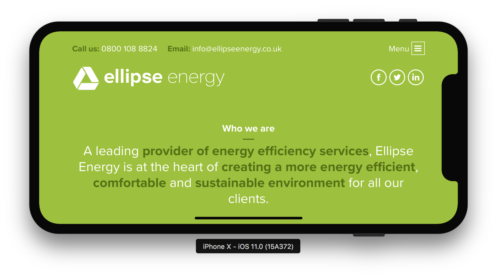

<!DOCTYPE HTML>
<html lang="zh-CN">
<head><meta name="generator" content="Hexo 3.8.0">
    <!--Setting-->
    <meta charset="UTF-8">
    <meta name="viewport" content="width=device-width, user-scalable=no, initial-scale=1.0, maximum-scale=1.0, minimum-scale=1.0">
    <meta http-equiv="X-UA-Compatible" content="IE=Edge,chrome=1">
    <meta http-equiv="Cache-Control" content="no-siteapp">
    <meta http-equiv="Cache-Control" content="no-transform">
    <meta name="renderer" content="webkit|ie-comp|ie-stand">
    <meta name="apple-mobile-web-app-capable" content="王永杰的网络日志">
    <meta name="apple-mobile-web-app-status-bar-style" content="black">
    <meta name="format-detection" content="telephone=no,email=no,adress=no">
    <meta name="browsermode" content="application">
    <meta name="screen-orientation" content="portrait">
    <link rel="dns-prefetch" href="http://wangyongjie.top">
    <!--SEO-->

    <meta name="keywords" content="CSS">


    <meta name="description" content="常用解决注意-webkit-device-pixel-ratio必须加前缀，否则无效
123456789101112/*iPhoneX的适配*/@media only screen and (d...">


<meta name="robots" content="all">
<meta name="google" content="all">
<meta name="googlebot" content="all">
<meta name="verify" content="all">

    <!--Title-->


<title>如何写一个适配iPhoneX的底部导航 | 王永杰的网络日志</title>


    <link rel="alternate" href="/atom.xml" title="王永杰的网络日志" type="application/atom+xml">


    <link rel="icon" href="/favicon.ico">

    


<link rel="stylesheet" href="/css/bootstrap.min.css?rev=3.3.7">
<link rel="stylesheet" href="/css/font-awesome.min.css?rev=4.5.0">
<link rel="stylesheet" href="/css/style.css?rev=@@hash">


    


    <script>
        var _hmt = _hmt || [];
        (function() {
            var hm = document.createElement("script");
            hm.src = "https://hm.baidu.com/hm.js?f42ffe5fed856accbf91820f137dab46";
            var s = document.getElementsByTagName("script")[0];
            s.parentNode.insertBefore(hm, s);
        })();
    </script>


    

</head>

</html>
<!--[if lte IE 8]>
<style>
    html{ font-size: 1em }
</style>
<![endif]-->
<!--[if lte IE 9]>
<div style="ie">你使用的浏览器版本过低，为了你更好的阅读体验，请更新浏览器的版本或者使用其他现代浏览器，比如Chrome、Firefox、Safari等。</div>
<![endif]-->

<body>
    <header class="main-header" style="background-image:url(http://snippet.shenliyang.com/img/banner.jpg)">
    <div class="main-header-box">
        <a class="header-avatar" href="/" title="wangyongjie">
            
        </a>
        <div class="branding">
        	<!--<h2 class="text-hide">Snippet主题,从未如此简单有趣</h2>-->
            
                <h2> 我是谁 我在哪 我在做什么 </h2>
            
    	</div>
    </div>
</header>
    <nav class="main-navigation">
    <div class="container">
        <div class="row">
            <div class="col-sm-12">
                <div class="navbar-header"><span class="nav-toggle-button collapsed pull-right" data-toggle="collapse" data-target="#main-menu" id="mnav">
                    <span class="sr-only"></span>
                        <i class="fa fa-bars"></i>
                    </span>
                    <a class="navbar-brand" href="http://wangyongjie.top">王永杰的网络日志</a>
                </div>
                <div class="collapse navbar-collapse" id="main-menu">
                    <ul class="menu">
                        
                            <li role="presentation" class="text-center">
                                <a href="/"><i class="fa "></i>首页</a>
                            </li>
                        
                            <li role="presentation" class="text-center">
                                <a href="/categories/前端/"><i class="fa "></i>前端</a>
                            </li>
                        
                            <li role="presentation" class="text-center">
                                <a href="/categories/后端/"><i class="fa "></i>后端</a>
                            </li>
                        
                            <li role="presentation" class="text-center">
                                <a href="/categories/工具/"><i class="fa "></i>工具</a>
                            </li>
                        
                            <li role="presentation" class="text-center">
                                <a href="/webnav/"><i class="fa "></i>导航</a>
                            </li>
                        
                            <li role="presentation" class="text-center">
                                <a href="/archives/"><i class="fa "></i>时间轴</a>
                            </li>
                        
                            <li role="presentation" class="text-center">
                                <a href="/message/"><i class="fa "></i>留言板</a>
                            </li>
                        
                            <li role="presentation" class="text-center">
                                <a href="/about/"><i class="fa "></i>关于</a>
                            </li>
                        
                    </ul>
                </div>
            </div>
        </div>
    </div>
</nav>
    <section class="content-wrap">
        <div class="container">
            <div class="row">
                <main class="col-md-8 main-content m-post">
                    <p id="process"></p>
<article class="post">
    <div class="post-head">
        <h1 id="如何写一个适配iPhoneX的底部导航">
            
	            如何写一个适配iPhoneX的底部导航
            
        </h1>
        <div class="post-meta">
    
        <span class="categories-meta fa-wrap">
            <i class="fa fa-folder-open-o"></i>
            <a class="category-link" href="/categories/前端/">前端</a>
        </span>
    

    
        <span class="fa-wrap">
            <i class="fa fa-tags"></i>
            <span class="tags-meta">
                
                    <a class="tag-link" href="/tags/CSS/">CSS</a>
                
            </span>
        </span>
    

    
        
        <span class="fa-wrap">
            <i class="fa fa-clock-o"></i>
            <span class="date-meta">2019/03/16</span>
        </span>
        
    
</div>
            
            
    </div>
    
    <div class="post-body post-content">
        <h2 id="常用解决"><a href="#常用解决" class="headerlink" title="常用解决"></a>常用解决</h2><p>注意<code>-webkit-device-pixel-ratio</code>必须加前缀，否则无效</p>
<figure class="highlight css"><table><tr><td class="gutter"><pre><span class="line">1</span><br><span class="line">2</span><br><span class="line">3</span><br><span class="line">4</span><br><span class="line">5</span><br><span class="line">6</span><br><span class="line">7</span><br><span class="line">8</span><br><span class="line">9</span><br><span class="line">10</span><br><span class="line">11</span><br><span class="line">12</span><br></pre></td><td class="code"><pre><span class="line"><span class="comment">/*iPhoneX的适配*/</span></span><br><span class="line">@<span class="keyword">media</span> only screen and (device-width: <span class="number">375px</span>) and (device-height: <span class="number">812px</span>) and (-webkit-device-pixel-ratio: <span class="number">3</span>) &#123;</span><br><span class="line">    <span class="selector-tag">header</span> &#123;</span><br><span class="line">        <span class="attribute">background-color</span>: black;</span><br><span class="line">    &#125;</span><br><span class="line">&#125;</span><br><span class="line"><span class="comment">/*iPhone8P的适配*/</span></span><br><span class="line">@<span class="keyword">media</span> only screen and (device-width: <span class="number">414px</span>) and (device-height: <span class="number">736px</span>) and (-webkit-device-pixel-ratio: <span class="number">3</span>) &#123;</span><br><span class="line">    <span class="selector-tag">header</span> &#123;</span><br><span class="line">        <span class="attribute">background-color</span>: deepskyblue;</span><br><span class="line">    &#125;</span><br><span class="line">&#125;</span><br></pre></td></tr></table></figure>
<p>国美解决办法</p>
<figure class="highlight css"><table><tr><td class="gutter"><pre><span class="line">1</span><br><span class="line">2</span><br><span class="line">3</span><br><span class="line">4</span><br><span class="line">5</span><br><span class="line">6</span><br><span class="line">7</span><br><span class="line">8</span><br><span class="line">9</span><br><span class="line">10</span><br><span class="line">11</span><br><span class="line">12</span><br><span class="line">13</span><br><span class="line">14</span><br><span class="line">15</span><br></pre></td><td class="code"><pre><span class="line">@<span class="keyword">media</span> only screen and (device-width: <span class="number">375px</span>) and (device-height: <span class="number">812px</span>) and (-webkit-device-pixel-ratio: <span class="number">3</span>) &#123;</span><br><span class="line">    @<span class="keyword">supports</span> (height: constant(safe-area-inset-top)) or (height: env(safe-area-inset-top)) &#123;</span><br><span class="line">        <span class="selector-class">.appInIOSTop</span> &#123;</span><br><span class="line">            <span class="attribute">padding-top</span>: <span class="built_in">calc</span>(var(--dpr) * <span class="built_in">var</span>(--safe-padding));</span><br><span class="line">        &#125;</span><br><span class="line"></span><br><span class="line">        <span class="selector-class">.appInIOSBottom</span> &#123;</span><br><span class="line">            <span class="attribute">padding-bottom</span>: <span class="built_in">calc</span>(var(--dpr) * <span class="built_in">var</span>(--safe-padding-bottom)) <span class="meta">!important</span>;</span><br><span class="line">        &#125;</span><br><span class="line"></span><br><span class="line">        <span class="selector-class">.more-menu-box</span> &#123;</span><br><span class="line">            <span class="attribute">top</span>: <span class="built_in">calc</span>(var(--dpr) * <span class="built_in">var</span>(--safe-padding) + <span class="number">1.02rem</span>) <span class="meta">!important</span>;</span><br><span class="line">        &#125;</span><br><span class="line">    &#125;</span><br><span class="line">&#125;</span><br></pre></td></tr></table></figure>
<blockquote>
<p>以下为知识补充</p>
</blockquote>
<h2 id="1-绝对长度单位"><a href="#1-绝对长度单位" class="headerlink" title="1. 绝对长度单位"></a>1. 绝对长度单位</h2><table>
<thead>
<tr>
<th>英寸</th>
<th>厘米</th>
<th>毫米</th>
<th>磅</th>
<th>pc</th>
</tr>
</thead>
<tbody>
<tr>
<td>inch</td>
<td>cm</td>
<td>mm</td>
<td>pt</td>
<td>pica</td>
</tr>
</tbody>
</table>
<h2 id="2-相对长度单位"><a href="#2-相对长度单位" class="headerlink" title="2. 相对长度单位"></a>2. 相对长度单位</h2><p>是网页设计中使用最多的长度单位，包括<code>px、em、rem</code>等</p>
<h2 id="3-屏幕尺寸"><a href="#3-屏幕尺寸" class="headerlink" title="3. 屏幕尺寸"></a>3. 屏幕尺寸</h2><p></p>
<blockquote>
<p>指屏幕的对角线的长度，单位是英寸，1英寸=2.54厘米</p>
</blockquote>
<table>
<thead>
<tr>
<th>iPhone 4/4S</th>
<th>iPhone 5/5C/5S/SE</th>
<th>iPhone 6/6S</th>
<th>iPhone 6S Plus</th>
<th>iPhone 7</th>
<th>iPhone 7 Plus</th>
<th>iPhone 8</th>
<th>iPhone 8 Plus</th>
<th>iPhone X</th>
</tr>
</thead>
<tbody>
<tr>
<td>3.5英寸</td>
<td>4英寸</td>
<td>4.7英寸</td>
<td>5.5英寸</td>
<td>4.7英寸</td>
<td>5.5英寸</td>
<td>4.7英寸</td>
<td>5.5英寸</td>
<td>5.8英寸</td>
</tr>
</tbody>
</table>
<h2 id="4-屏幕分辨率"><a href="#4-屏幕分辨率" class="headerlink" title="4. 屏幕分辨率"></a>4. 屏幕分辨率</h2><p>指在横纵向上的像素点数，单位是<strong>px</strong>，1px=1个像素点。一般以<code>纵向像素*横向像素</code>来表示一个手机的分辨率，如1960*1080（这里的1像素指的是物理设备的1个像素点）</p>
<table>
<thead>
<tr>
<th>机型</th>
<th>分辨率</th>
<th>机型</th>
<th>分辨率</th>
<th>机型</th>
<th>分辨率</th>
</tr>
</thead>
<tbody>
<tr>
<td>iPhone 4/4S</td>
<td>960*640</td>
<td>iPhone 6S Plus</td>
<td>1920*1080</td>
<td>iPhone 8 Plus</td>
<td>1920*1080</td>
</tr>
<tr>
<td>iPhone 5/5S</td>
<td>1136*640</td>
<td>iPhone 7</td>
<td>1334*750</td>
<td>iPhone X</td>
<td>2436*1125</td>
</tr>
<tr>
<td>iPhone SE</td>
<td>1136*640</td>
<td>iPhone 7 Plus</td>
<td>1920*1080</td>
<td></td>
<td></td>
</tr>
<tr>
<td>iPhone 6/6S</td>
<td>1334*750</td>
<td>iPhone 8</td>
<td>1334*750</td>
<td></td>
</tr>
</tbody>
</table>
<h2 id="5-屏幕像素密度"><a href="#5-屏幕像素密度" class="headerlink" title="5. 屏幕像素密度"></a>5. 屏幕像素密度</h2><p></p>
<p>屏幕上每英寸可以显示的像素点的数量，单位是<strong>ppi</strong>，即<strong>pixels per inch</strong>的缩写。屏幕像素密度与屏幕尺寸和屏幕分辨率有关，在单一变化条件下，屏幕尺寸越小、分辨率越高，像素密度越大，反之越小</p>
<p></p>
<ul>
<li>屏幕上勾股定理算出对角线的分辨率：<strong>√(1920²+1080²)≈2203px</strong></li>
<li>对角线分辨率除以屏幕尺寸：<strong>2203/5≈440dpi</strong></li>
</ul>
<figure class="highlight js"><table><tr><td class="gutter"><pre><span class="line">1</span><br><span class="line">2</span><br></pre></td><td class="code"><pre><span class="line"><span class="number">1920</span>^<span class="number">2</span> + <span class="number">1080</span>^<span class="number">2</span> ≈ <span class="number">2203</span>^<span class="number">2</span>  <span class="comment">//3686400 + 1166400 = 4852800</span></span><br><span class="line"><span class="number">2203</span> / <span class="number">5</span> ≈ <span class="number">440</span></span><br></pre></td></tr></table></figure>
<h2 id="6-PPI与DPI"><a href="#6-PPI与DPI" class="headerlink" title="6. PPI与DPI"></a>6. PPI与DPI</h2><p></p>
<p>PPI（Pixel Per Inch by diagonal）：表示沿着对角线，每英寸所拥有的像素（Pixel）数目<br>PPI数值越高，代表显示屏能够以越高的密度显示图像，即通常所说的分辨率越高、颗粒感越弱</p>
<table>
<thead>
<tr>
<th>ppi与dpi</th>
<th>描述</th>
</tr>
</thead>
<tbody>
<tr>
<td>ppi</td>
<td><code>pixels per inch</code>，屏幕上每英寸可以显示的像素点的数量，即屏幕像素密度</td>
</tr>
<tr>
<td>dpi</td>
<td><code>dots per inch</code>，最初用于衡量打印物上每英寸的点数密度，就是打印机可以在一英寸内打多少个点。当dpi的概念用在计算机屏幕上时，就称之为ppi。ppi和dpi是同一个概念，Android比较喜欢使用dpi，IOS比较喜欢使用ppi</td>
</tr>
</tbody>
</table>
<h2 id="7-Viewport"><a href="#7-Viewport" class="headerlink" title="7. Viewport"></a>7. Viewport</h2><p>移动端开发中，通常我们都会采用<code>meta</code>标签设置<code>viewport</code><br><figure class="highlight html"><table><tr><td class="gutter"><pre><span class="line">1</span><br></pre></td><td class="code"><pre><span class="line"><span class="tag">&lt;<span class="name">meta</span> <span class="attr">name</span>=<span class="string">"viewport"</span> <span class="attr">content</span>=<span class="string">"width=device-width, initial-scale=1, maximum-scale=1, user-scalable=no"</span>&gt;</span></span><br></pre></td></tr></table></figure></p>
<h3 id="1-viewport是什么"><a href="#1-viewport是什么" class="headerlink" title="1. viewport是什么?"></a>1. viewport是什么?</h3><p></p>
<p>通俗来讲，移动端的viewport就是我们所能看到的手机端浏览器的可视窗口大小，但viewport又不仅仅局限于可视窗口的大小，一般情况下，它是比默认窗口大小要大的，这是因为考虑到移动设备的分辨率相对于桌面电脑来说都比较小，所以为了能在移动端正常显示为桌面浏览器而设计的网页，移动端的浏览器都会默认把自己的默认的viewport设为980px到1024px不等，但其后果就是会出现横向滚动条，因为移动端浏览器可视区域的大小是比默认的viewport宽度要小的</p>
<table>
<thead>
<tr>
<th>参数</th>
<th>描述</th>
</tr>
</thead>
<tbody>
<tr>
<td>width</td>
<td>设置layout viewport的宽度，为一个正整数，或字符串”device-width”</td>
</tr>
<tr>
<td>initial-scale</td>
<td>设置页面的初始缩放值，为一个数字，可以带小数</td>
</tr>
<tr>
<td>minimum-scale</td>
<td>允许用户的最小缩放值，为一个数字，可以带小数</td>
</tr>
<tr>
<td>maximum-scale</td>
<td>允许用户的最大缩放值，为一个数字，可以带小数</td>
</tr>
<tr>
<td>height</td>
<td>设置layout viewport  的高度，这个属性对我们并不重要，很少使用</td>
</tr>
<tr>
<td>user-scalable</td>
<td>是否允许用户进行缩放，值为”no”或”yes”, no 代表不允许，yes代表允许</td>
</tr>
</tbody>
</table>
<h3 id="2-不同的设备对1px有不一样的定义"><a href="#2-不同的设备对1px有不一样的定义" class="headerlink" title="2. 不同的设备对1px有不一样的定义"></a>2. 不同的设备对1px有不一样的定义</h3><p>在css中我们一般使用px作为单位，在桌面浏览器中css的1个像素往往都是对应着电脑屏幕的1个物理像素，这可能会造成我们的一个错觉，那就是css中的像素就是设备的物理像素。但实际情况却并非如此，css中的像素只是一个抽象的单位，在不同的设备或不同的环境中，css中的1px所代表的设备物理像素是不同的。在为桌面浏览器设计的网页中，我们无需对这个津津计较，但在移动设备上，必须弄明白这点。在早先的移动设备中，屏幕像素密度都比较低，如iphone3，它的分辨率为320x480，在iphone3上，一个css像素确实是等于一个屏幕物理像素的。后来随着技术的发展，移动设备的屏幕像素密度越来越高，从iphone4开始，苹果公司便推出了所谓的Retina屏，分辨率提高了一倍，变成640x960，但屏幕尺寸却没变化，这就意味着同样大小的屏幕上，像素却多了一倍，这时，一个css像素是等于两个物理像素的。</p>
<p>在移动端浏览器中以及某些桌面浏览器中，window对象有一个devicePixelRatio属性，它的官方的定义为：设备物理像素和设备独立像素的比例，也就是<code>devicePixelRatio = 物理像素 / 独立像素</code>。css中的px就可以看做是设备的独立像素，所以通过devicePixelRatio，我们可以知道该设备上一个css像素代表多少个物理像素。例如，在Retina屏的iphone上，devicePixelRatio的值为2，也就是说1个css像素相当于2个物理像素</p>
<p>其实就是移动端和PC端的px是不同的，移动端的屏幕可视区域(viewport)小但像素多，所以跟PC相比的每个独立像素点的物理像素是多的，也就是移动端物理像素更密集，所以更PC的独立像素有<code>dp</code>的倍数转换</p>
<p>在进行具体的分析之前，首先得知道下面这些关键性基本概念(术语)。</p>
<h3 id="3-物理像素-physical-pixel"><a href="#3-物理像素-physical-pixel" class="headerlink" title="3. 物理像素(physical pixel)"></a>3. 物理像素(physical pixel)</h3><p>一个物理像素是显示器(手机屏幕)上最小的物理显示单元，在操作系统的调度下，每一个设备像素都有自己的颜色值和亮度值。</p>
<h3 id="4-设备独立像素-density-independent-pixel"><a href="#4-设备独立像素-density-independent-pixel" class="headerlink" title="4. 设备独立像素(density-independent pixel)"></a>4. 设备独立像素(density-independent pixel)</h3><p>设备独立像素(也叫密度无关像素)，可以认为是计算机坐标系统中得一个点，这个点代表一个可以由程序使用的虚拟像素(比如: css像素)，然后由相关系统转换为物理像素。</p>
<p>所以说，物理像素和设备独立像素之间存在着一定的对应关系，这就是接下来要说的设备像素比。</p>
<h3 id="5-设备像素比-device-pixel-ratio"><a href="#5-设备像素比-device-pixel-ratio" class="headerlink" title="5. 设备像素比(device pixel ratio )"></a>5. 设备像素比(device pixel ratio )</h3><p>设备像素比(简称dpr)定义了物理像素和设备独立像素的对应关系，它的值可以按如下的公式的得到：<br><figure class="highlight html"><table><tr><td class="gutter"><pre><span class="line">1</span><br></pre></td><td class="code"><pre><span class="line">设备像素比 = 物理像素 / 设备独立像素 // 在某一方向上，x方向或者y方向</span><br></pre></td></tr></table></figure></p>
<p>还可以通过window.devicePixelRatio获取到当前设备的dpr<br><figure class="highlight js"><table><tr><td class="gutter"><pre><span class="line">1</span><br></pre></td><td class="code"><pre><span class="line"><span class="built_in">window</span>.devicePixelRatio</span><br></pre></td></tr></table></figure></p>
<div class="table_scoll"></div>

<table>
<thead>
<tr>
<th>机型</th>
<th>iPhone 3G/3GS</th>
<th>iPhone 4/4S</th>
<th>iPhone 5/5C/5S/SE</th>
<th>iPhone 6/6S</th>
<th>iPhone 6S Plus</th>
<th>iPhone 7</th>
<th>iPhone 7 Plus</th>
<th>iPhone 8</th>
<th>iPhone 8 Plus</th>
<th>iPhone X</th>
</tr>
</thead>
<tbody>
<tr>
<td>屏幕尺寸</td>
<td>3.5英寸</td>
<td>3.5英寸</td>
<td>4英寸</td>
<td>4.7英寸</td>
<td>5.5英寸</td>
<td>4.7英寸</td>
<td>5.5英寸</td>
<td>4.7英寸</td>
<td>5.5英寸</td>
<td>5.8英寸</td>
</tr>
<tr>
<td>独立像素(CSS像素)</td>
<td>480*320</td>
<td>480*320</td>
<td>568*320</td>
<td>667*375</td>
<td>736*414</td>
<td>667*375</td>
<td>736*414</td>
<td>667*375</td>
<td>736*414</td>
<td>812*375</td>
</tr>
<tr>
<td>物理像素(分辨率)</td>
<td>480*320</td>
<td>960*640</td>
<td>1136*640</td>
<td>1334*750</td>
<td>1920*1080(2208x1242)</td>
<td>1334*750</td>
<td>1920*1080</td>
<td>1334*750</td>
<td>1920*1080</td>
<td>2436*1125</td>
</tr>
<tr>
<td>ppi/dpi(像素密度)</td>
<td>163</td>
<td>326</td>
<td>326</td>
<td>326</td>
<td>401</td>
<td>326</td>
<td>401</td>
<td>326</td>
<td>401</td>
<td>458</td>
</tr>
<tr>
<td>dpr(倍图)</td>
<td>1</td>
<td>2</td>
<td>2</td>
<td>2</td>
<td>3(2.5)</td>
<td>3</td>
<td>3</td>
<td>3</td>
<td>3</td>
<td>3(2.9)</td>
</tr>
</tbody>
</table>
<p>如果APP要同时兼容iPhone3GS~iPhone6+，则需要提供<a href="mailto:icon.png/icon@2x.png" target="_blank" rel="noopener">icon.png/icon@2x.png</a><a href="mailto:/icon@3x.png" target="_blank" rel="noopener">/icon@3x.png</a>三种分辨率的图片</p>
<p>在Android中，规定以160dpi为基准，1dp=1px。如果密度是320dpi，则1dp=2px，以此类推</p>
<p>2K分辨率指的是屏幕分辨率达到了一种级别,指屏幕横向像素达到2000以上（iPhone X是2K屏）</p>
<h2 id="8-iPhoneX的适配"><a href="#8-iPhoneX的适配" class="headerlink" title="8. iPhoneX的适配"></a>8. iPhoneX的适配</h2><h3 id="1-background-color"><a href="#1-background-color" class="headerlink" title="1. background-color"></a>1. background-color</h3><p>如果网页设置了一个背景颜色，那么最简单解决方案是，在body节点设置<code>background-color</code>，使背景颜色填充整个屏幕，从而解决横屏显示左右白边的问题</p>
<h3 id="2-viewport-fit"><a href="#2-viewport-fit" class="headerlink" title="2. viewport-fit"></a>2. viewport-fit</h3><figure class="highlight html"><table><tr><td class="gutter"><pre><span class="line">1</span><br><span class="line">2</span><br><span class="line">3</span><br><span class="line">4</span><br><span class="line">5</span><br><span class="line">6</span><br></pre></td><td class="code"><pre><span class="line"><span class="comment">&lt;!--默认值:可视窗口完全包含网页内容 相当于在安全区域展示--&gt;</span></span><br><span class="line"><span class="tag">&lt;<span class="name">meta</span> <span class="attr">name</span>=<span class="string">"viewport"</span> <span class="attr">content</span>=<span class="string">"width=device-width, initial-scale=1.0, viewport-fit=auto"</span>&gt;</span></span><br><span class="line"><span class="comment">&lt;!--或--&gt;</span></span><br><span class="line"><span class="tag">&lt;<span class="name">meta</span> <span class="attr">name</span>=<span class="string">"viewport"</span> <span class="attr">content</span>=<span class="string">"width=device-width, initial-scale=1.0, viewport-fit=contain"</span>&gt;</span></span><br><span class="line"><span class="comment">&lt;!--网页内容完全覆盖可视窗口--&gt;</span></span><br><span class="line"><span class="tag">&lt;<span class="name">meta</span> <span class="attr">name</span>=<span class="string">"viewport"</span> <span class="attr">content</span>=<span class="string">"width=device-width, initial-scale=1.0, viewport-fit=cover"</span>&gt;</span></span><br></pre></td></tr></table></figure>
<table>
<thead>
<tr>
<th>viewport-fit</th>
<th>描述</th>
<th>示例</th>
<th>示例</th>
<th>示例</th>
</tr>
</thead>
<tbody>
<tr>
<td>auto/contain</td>
<td>默认值，页面内容显示在<code>safe area</code>内</td>
<td><a href="https://wscats.github.io/iPhone-X/viewport-fit/contain/" target="_blank" rel="noopener">示例1</a></td>
<td></td>
<td></td>
</tr>
<tr>
<td>cover</td>
<td>页面内容充满屏幕</td>
<td><a href="https://wscats.github.io/iPhone-X/viewport-fit/cover/cover.html" target="_blank" rel="noopener">示例1</a></td>
<td><a href="https://wscats.github.io/iPhone-X/viewport-fit/cover/sefe-cover.html" target="_blank" rel="noopener">示例2</a></td>
<td><a href="https://wscats.github.io/iPhone-X/viewport-fit/min-max/" target="_blank" rel="noopener">示例3</a></td>
</tr>
<tr>
<td>横屏列表侧刘海</td>
<td>横屏下列表环绕刘海</td>
<td><a href="https://wscats.github.io/iPhone-X/css-shape-iphoneX/iPhoneX3.html" target="_blank" rel="noopener">示例1</a></td>
<td></td>
<td></td>
</tr>
</tbody>
</table>
<p>设置auto前<br><br>设置cover后<br></p>
<h3 id="3-safe-area-inset"><a href="#3-safe-area-inset" class="headerlink" title="3. safe-area-inset-*"></a>3. safe-area-inset-*</h3><p>在设置<code>viewport-fit=cover</code>之后，Web中会新增四个常量<br><figure class="highlight css"><table><tr><td class="gutter"><pre><span class="line">1</span><br><span class="line">2</span><br><span class="line">3</span><br><span class="line">4</span><br></pre></td><td class="code"><pre><span class="line"><span class="selector-tag">safe-area-inset-top</span></span><br><span class="line"><span class="selector-tag">safe-area-inset-right</span></span><br><span class="line"><span class="selector-tag">safe-area-inset-left</span></span><br><span class="line"><span class="selector-tag">safe-area-inset-bottom</span></span><br></pre></td></tr></table></figure></p>
<p>分别表示safe area和可视窗口viewport顶部，右边，左边，底部的间距，可以用于设置margin和padding或者绝对定位时left和top</p>
<blockquote>
<p>注意：在横屏和竖屏状态下，safe-area-inset-*的值不同</p>
</blockquote>
<p></p>
<p>为了解决应用<code>viewport-fit=cover</code>之后，有些显示内容被裁剪的问题，我们可以通过添加边距使得网页主要内容处于safe area中不被裁剪，解决方式如下</p>
<figure class="highlight css"><table><tr><td class="gutter"><pre><span class="line">1</span><br></pre></td><td class="code"><pre><span class="line"><span class="selector-tag">padding</span>: <span class="selector-tag">constant</span>(<span class="selector-tag">safe-area-inset-top</span>) <span class="selector-tag">constant</span>(<span class="selector-tag">safe-area-inset-right</span>) <span class="selector-tag">constant</span>(<span class="selector-tag">safe-area-inset-bottom</span>) <span class="selector-tag">constant</span>(<span class="selector-tag">safe-area-inset-left</span>);</span><br></pre></td></tr></table></figure>
<p></p>
<p>示例，比如下面是顶部导航条的适配，能让左上右都能出现padding来让元素保留在安全区域以内</p>
<p>总结为，我们可以利用<code>safe-area-inset-*</code>做以下适配，详细请看<a href="https://wscats.github.io/iPhone-X/css-shape-iphoneX/iPhoneX5.html" target="_blank" rel="noopener">DEMO</a></p>
<ul>
<li>竖屏下，对底部做<code>padding-bottom: constant(safe-area-inset-bottom);</code>，其他设置是无意义的</li>
<li>横屏下，对底部设置左，下，右的<code>safe-area-inset-*</code>，对头部设置左和右的<code>safe-area-inset-*</code>，其他设置也是无意义的</li>
</ul>
<figure class="highlight html"><table><tr><td class="gutter"><pre><span class="line">1</span><br><span class="line">2</span><br><span class="line">3</span><br><span class="line">4</span><br><span class="line">5</span><br><span class="line">6</span><br><span class="line">7</span><br><span class="line">8</span><br><span class="line">9</span><br><span class="line">10</span><br><span class="line">11</span><br><span class="line">12</span><br><span class="line">13</span><br><span class="line">14</span><br><span class="line">15</span><br><span class="line">16</span><br><span class="line">17</span><br><span class="line">18</span><br><span class="line">19</span><br><span class="line">20</span><br><span class="line">21</span><br><span class="line">22</span><br><span class="line">23</span><br></pre></td><td class="code"><pre><span class="line"><span class="tag">&lt;<span class="name">header</span>&gt;</span><span class="tag">&lt;<span class="name">button</span>&gt;</span>返回<span class="tag">&lt;/<span class="name">button</span>&gt;</span> 头部<span class="tag">&lt;/<span class="name">header</span>&gt;</span></span><br><span class="line"><span class="tag">&lt;<span class="name">style</span>&gt;</span><span class="undefined"></span></span><br><span class="line"><span class="css">	* &#123;<span class="attribute">margin</span>: <span class="number">0</span>;<span class="attribute">padding</span>: <span class="number">0</span>;&#125;</span></span><br><span class="line"><span class="undefined">	body &#123;</span></span><br><span class="line"><span class="undefined">		width: 100%;height: 100%;</span></span><br><span class="line"><span class="undefined">		//设置背景颜色，也是一种适配方案</span></span><br><span class="line"><span class="css">		<span class="selector-tag">background-color</span>: <span class="selector-id">#A4F4B0</span>;</span></span><br><span class="line"><span class="undefined">	&#125;</span></span><br><span class="line"><span class="undefined">	header &#123;</span></span><br><span class="line"><span class="undefined">		background-color: red;height: 50px;line-height: 50px;width: 100%;color: white;position: fixed;left: 0;right: 0;top: 0;bottom: 0px;</span></span><br><span class="line"><span class="undefined">		//cover下元素出现对应的padding来适配</span></span><br><span class="line"><span class="undefined">		padding-left: constant(safe-area-inset-left);</span></span><br><span class="line"><span class="undefined">		padding-right: constant(safe-area-inset-right);</span></span><br><span class="line"><span class="undefined">		//padding-bottom: constant(safe-area-inset-bottom);</span></span><br><span class="line"><span class="undefined">		padding-top: constant(safe-area-inset-top);</span></span><br><span class="line"><span class="undefined">	&#125;</span></span><br><span class="line"><span class="undefined">	</span></span><br><span class="line"><span class="undefined">	button &#123;</span></span><br><span class="line"><span class="undefined">		display: inline-block;background-color: blue;color: white;border: none;height: 50px;width: 80px;</span></span><br><span class="line"><span class="undefined">		//字体记得必须设置，不然按钮会有像素的误差</span></span><br><span class="line"><span class="undefined">		font-size: 18px;</span></span><br><span class="line"><span class="undefined">	&#125;</span></span><br><span class="line"><span class="undefined"></span><span class="tag">&lt;/<span class="name">style</span>&gt;</span></span><br></pre></td></tr></table></figure>
<h3 id="4-媒体查询"><a href="#4-媒体查询" class="headerlink" title="4. 媒体查询"></a>4. 媒体查询</h3><table>
<thead>
<tr>
<th></th>
<th></th>
</tr>
</thead>
<tbody>
<tr>
<td>device-width</td>
<td>屏幕高(独立像素)</td>
</tr>
<tr>
<td>device-height</td>
<td>屏幕宽(独立像素)</td>
</tr>
<tr>
<td>-webkit-device-pixel-ratio</td>
<td>dpr</td>
</tr>
</tbody>
</table>
<p>注意<code>-webkit-device-pixel-ratio</code>必须加前缀，否则无效<br><figure class="highlight css"><table><tr><td class="gutter"><pre><span class="line">1</span><br><span class="line">2</span><br><span class="line">3</span><br><span class="line">4</span><br><span class="line">5</span><br><span class="line">6</span><br><span class="line">7</span><br><span class="line">8</span><br><span class="line">9</span><br><span class="line">10</span><br><span class="line">11</span><br><span class="line">12</span><br></pre></td><td class="code"><pre><span class="line"><span class="comment">/*iPhoneX的适配*/</span></span><br><span class="line">@<span class="keyword">media</span> only screen and (device-width: <span class="number">375px</span>) and (device-height: <span class="number">812px</span>) and (-webkit-device-pixel-ratio: <span class="number">3</span>) &#123;</span><br><span class="line">	<span class="selector-tag">header</span> &#123;</span><br><span class="line">		<span class="attribute">background-color</span>: black;</span><br><span class="line">	&#125;</span><br><span class="line">&#125;</span><br><span class="line"><span class="comment">/*iPhone8P的适配*/</span></span><br><span class="line">@<span class="keyword">media</span> only screen and (device-width: <span class="number">414px</span>) and (device-height: <span class="number">736px</span>) and (-webkit-device-pixel-ratio: <span class="number">3</span>) &#123;</span><br><span class="line">	<span class="selector-tag">header</span> &#123;</span><br><span class="line">		<span class="attribute">background-color</span>: deepskyblue;</span><br><span class="line">	&#125;</span><br><span class="line">&#125;</span><br></pre></td></tr></table></figure></p>
<h2 id="参考文档"><a href="#参考文档" class="headerlink" title="参考文档"></a>参考文档</h2><ul>
<li><a href="http://www.html-js.com/article/Mobile-terminal-H5-mobile-terminal-HD-multi-screen-adaptation-scheme%203041" target="_blank" rel="noopener">移动端高清、多屏适配方案</a></li>
<li><a href="http://blog.csdn.net/liujie19901217/article/details/51982403" target="_blank" rel="noopener">手淘移动端适配的方案学习和相关思考</a></li>
<li><a href="https://github.com/amfe/lib-flexible" target="_blank" rel="noopener">手淘适配方案lib-flexible</a></li>
</ul>
<h2 id="iPhone-X适配参考文档"><a href="#iPhone-X适配参考文档" class="headerlink" title="iPhone X适配参考文档"></a>iPhone X适配参考文档</h2><ul>
<li><a href="https://www.w3cplus.com/mobile/designing-websites-for-iphone-x.html" target="_blank" rel="noopener">iPhone X的Web设计</a></li>
<li><a href="https://objcer.com/2017/09/21/Understanding-the-WebView-Viewport-in-iOS-11-iPhone-X/" target="_blank" rel="noopener">剖析 iOS 11 网页适配问题</a></li>
<li><a href="https://www.cnblogs.com/lolDragon/p/7795174.html" target="_blank" rel="noopener">关于H5页面在iPhoneX适配</a></li>
</ul>
<p><br><strong>本文作者</strong>：王永杰<br><strong>本文地址</strong>： <a href="http://wangyongjie.top/blog/22191/">http://wangyongjie.top/blog/22191/</a> <br><strong>版权声明</strong>：本博客所有文章除特别声明外，均采用 <a href="http://creativecommons.org/licenses/by-nc-sa/3.0/cn/" target="_blank" rel="noopener">CC BY-NC-SA 3.0 CN</a> 许可协议。转载请注明出处！</p>

    </div>
    
        <div class="reward" ontouchstart>
    <div class="reward-wrap">赏
        <div class="reward-box">
            
                <span class="reward-type">
                    <b>支付宝打赏</b>
                </span>
            
            
                <span class="reward-type">
                    <b>微信打赏</b>
                </span>
            
        </div>
    </div>
    <p class="reward-tip">一分也是爱</p>
</div>


    
    <div class="post-footer">
        <div>
            
                转载声明：商业转载请联系作者获得授权,非商业转载请注明出处 <a href="http://wangyongjie.top" target="_blank"> http://wangyongjie.top</a>
            
        </div>
        <div>
            
        </div>
    </div>
</article>

<div class="article-nav prev-next-wrap clearfix">
    
        <a href="/blog/19369/" class="pre-post btn btn-default" title="前端JS基础面试技巧-更新中。。。">
            <i class="fa fa-angle-left fa-fw"></i><span class="hidden-lg">上一篇</span>
            <span class="hidden-xs">前端JS基础面试技巧-更新中。。。</span>
        </a>
    
    
        <a href="/blog/9755/" class="next-post btn btn-default" title="js模块化发展">
            <span class="hidden-lg">下一篇</span>
            <span class="hidden-xs">js模块化发展</span><i class="fa fa-angle-right fa-fw"></i>
        </a>
    
</div>


    <div id="comments">
        
	
<div id="lv-container" data-id="city" data-uid="MTAyMC8zNDc5OS8xMTMzNg==">
  <script type="text/javascript">
     (function(d, s) {
         var j, e = d.getElementsByTagName(s)[0];
         if (typeof LivereTower === 'function') { return; }
         j = d.createElement(s);
         j.src = 'https://cdn-city.livere.com/js/embed.dist.js';
         j.async = true;
         e.parentNode.insertBefore(j, e);
     })(document, 'script');
  </script>
</div>


    </div>


                </main>
                
                    <aside id="article-toc" role="navigation" class="col-md-4">
    <div class="widget">
        <h3 class="title">文章目录</h3>
        
            <ol class="toc"><li class="toc-item toc-level-2"><a class="toc-link" href="#常用解决"><span class="toc-text">常用解决</span></a></li><li class="toc-item toc-level-2"><a class="toc-link" href="#1-绝对长度单位"><span class="toc-text">1. 绝对长度单位</span></a></li><li class="toc-item toc-level-2"><a class="toc-link" href="#2-相对长度单位"><span class="toc-text">2. 相对长度单位</span></a></li><li class="toc-item toc-level-2"><a class="toc-link" href="#3-屏幕尺寸"><span class="toc-text">3. 屏幕尺寸</span></a></li><li class="toc-item toc-level-2"><a class="toc-link" href="#4-屏幕分辨率"><span class="toc-text">4. 屏幕分辨率</span></a></li><li class="toc-item toc-level-2"><a class="toc-link" href="#5-屏幕像素密度"><span class="toc-text">5. 屏幕像素密度</span></a></li><li class="toc-item toc-level-2"><a class="toc-link" href="#6-PPI与DPI"><span class="toc-text">6. PPI与DPI</span></a></li><li class="toc-item toc-level-2"><a class="toc-link" href="#7-Viewport"><span class="toc-text">7. Viewport</span></a><ol class="toc-child"><li class="toc-item toc-level-3"><a class="toc-link" href="#1-viewport是什么"><span class="toc-text">1. viewport是什么?</span></a></li><li class="toc-item toc-level-3"><a class="toc-link" href="#2-不同的设备对1px有不一样的定义"><span class="toc-text">2. 不同的设备对1px有不一样的定义</span></a></li><li class="toc-item toc-level-3"><a class="toc-link" href="#3-物理像素-physical-pixel"><span class="toc-text">3. 物理像素(physical pixel)</span></a></li><li class="toc-item toc-level-3"><a class="toc-link" href="#4-设备独立像素-density-independent-pixel"><span class="toc-text">4. 设备独立像素(density-independent pixel)</span></a></li><li class="toc-item toc-level-3"><a class="toc-link" href="#5-设备像素比-device-pixel-ratio"><span class="toc-text">5. 设备像素比(device pixel ratio )</span></a></li></ol></li><li class="toc-item toc-level-2"><a class="toc-link" href="#8-iPhoneX的适配"><span class="toc-text">8. iPhoneX的适配</span></a><ol class="toc-child"><li class="toc-item toc-level-3"><a class="toc-link" href="#1-background-color"><span class="toc-text">1. background-color</span></a></li><li class="toc-item toc-level-3"><a class="toc-link" href="#2-viewport-fit"><span class="toc-text">2. viewport-fit</span></a></li><li class="toc-item toc-level-3"><a class="toc-link" href="#3-safe-area-inset"><span class="toc-text">3. safe-area-inset-*</span></a></li><li class="toc-item toc-level-3"><a class="toc-link" href="#4-媒体查询"><span class="toc-text">4. 媒体查询</span></a></li></ol></li><li class="toc-item toc-level-2"><a class="toc-link" href="#参考文档"><span class="toc-text">参考文档</span></a></li><li class="toc-item toc-level-2"><a class="toc-link" href="#iPhone-X适配参考文档"><span class="toc-text">iPhone X适配参考文档</span></a></li></ol>
        
    </div>
</aside>

                
            </div>
        </div>
    </section>
    <footer class="main-footer">
    <div class="container">
        <div class="row">
        </div>
    </div>
</footer>

<a id="back-to-top" class="icon-btn hide">
	<i class="fa fa-chevron-up"></i>
</a>


    <div class="copyright">
    <div class="container">
        <div class="row">
            <div class="col-sm-12">
                <div class="busuanzi">
    
</div>

            </div>
            <div class="col-sm-12">
                <span>Copyright &copy; 2019
                </span> |
                <span>
                    Powered by <a href="//hexo.io" class="copyright-links" target="_blank" rel="nofollow">Hexo</a>
                </span> |
                <span>
                    Theme by <a href="//github.com/shenliyang/hexo-theme-snippet.git" class="copyright-links" target="_blank" rel="nofollow">Snippet</a>
                </span>
            </div>
        </div>
    </div>
</div>


<script src="/js/app.js?rev=@@hash"></script>

</body>
</html>